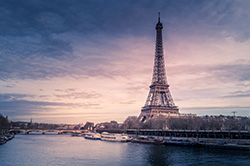
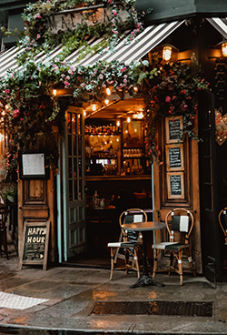

Visit Paris
 Welcome to Paris, France! Otherwise known as the "city of love," Paris is home to the louvre museum, Eiffel Tower, many unique cafes, and other shops/attractions within the bounds of the city. Venturous Voyage patrons will enjoy a 3-month all-inclusive stay at the renknowned Le Hotel Paris. Here, guests will experience Paris' beloved quisine alongside trips to popular and hidden gem attractions scattered throughout the city.
Welcome to Paris, France! Otherwise known as the "city of love," Paris is home to the louvre museum, Eiffel Tower, many unique cafes, and other shops/attractions within the bounds of the city. Venturous Voyage patrons will enjoy a 3-month all-inclusive stay at the renknowned Le Hotel Paris. Here, guests will experience Paris' beloved quisine alongside trips to popular and hidden gem attractions scattered throughout the city.
Learn Paris
 Of course, we couldn't miss the famous Eiffel Tower! The Eiffel Tower is one of the world's most frequently visited attractions, welcoming over 7 million visitors each year. The tower still stands strong after its construction in 1887 funded by French engineer Gustave Eiffel. Venturous Voyage will offer multiple opportunities for guests to travel to Champ de Mars and view the marvelous attraction for themselves!
Know Paris
The best cafes at your fingertips. Paris opened their first cafes in 1660 and have since been one of their travel staples. Perfect for relaxing or grabbing a quick bite, Paris has the perfect cafe for you! Parisian cafes are marked by their historical importance,interior style, and successful menu items unique to each cafe. Venturous voyage will take you across 15 popular cafes across Paris, France. We hope that we can help you find the perfect cafe during your stay (maybe even go back for seconds!).